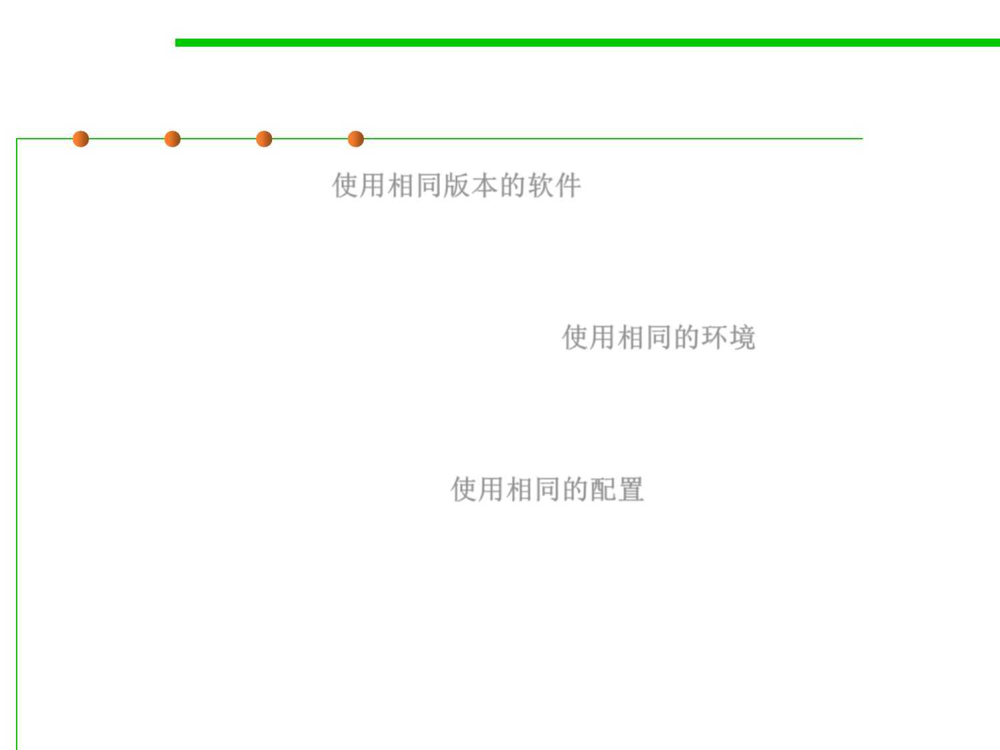

7.4 Debugging
What to control in order to reproduce bugs?
▪ The software itself 使用相同版本的软件
– If the bug is in an area that has changed recently, then ensuring that
you’re running the same version of the software as it was reported against
is a good first step.
▪ The environment it’s running within 使用相同的环境
– If interaction with an external system (some particular piece of hardware
or a remote server perhaps) is involved, then you probably want to ensure
that you’re using the same.
▪ The inputs you provide to it 使用相同的配置
– If the bug is related to an area that behaves very differently depending
upon how the software is configured, then start by replicating the user’s
configuration.